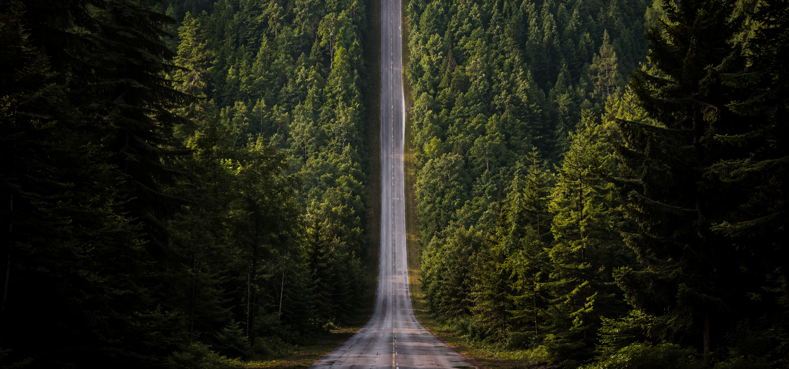
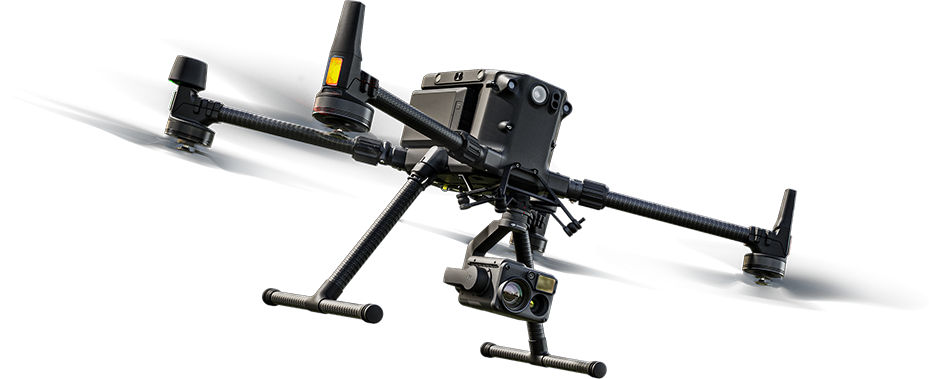

Adatok, amelyekre építhet
LiDAR technológiával, fotogrammetriával és ezek drónos integrációjával nyújtunk megbízható geodéziai adatokat energetikai és ingatlanprojektekhez
Pontosság, megbízhatóság, szakértelem a geodézia szolgálatában
Cégünk teljes körű geodéziai szolgáltatásokat nyújt magánszemélyek, vállalkozások és önkormányzatok számára. Legyen szó tervezési alaptérkép készítéséről, kitűzési feladatokról, területrendezésről vagy bármilyen földmérési munkáról, tapasztalt szakembereink korszerű eszközparkkal, naprakész szaktudással és kiemelt precizitással állnak ügyfeleink rendelkezésére.
Több éves szakmai tapasztalatunkkal arra törekszünk, hogy minden projekt már az első pillanattól biztos és pontos alapokra épülhessen. Hiszünk a megbízható, átlátható együttműködésben, és abban, hogy a gondosan előkészített geodéziai munka a sikeres beruházások egyik legfontosabb alappillére.
Drónos és statikus pontfelhő-felvételezéssel, fotogrammetriával korszerű, mérhető és feldolgozható téradatokat állítunk elő — terepi helyszíntől a komplex infrastruktúráig.
Legyen szó egyszerű kérdésről vagy összetett geodéziai feladatról — szakembereink készséggel állnak rendelkezésére. Minden megkeresésre személyesen válaszolunk.